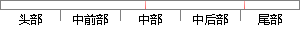

sql = "update user set userStatus='%s' where userId='%s';
片段位置图

相似结果|
相似片段 1：) && (userpwd.equals("1"))) {sql = "update [user] set pwd='" + newpwd + "' where id='" + userid + "'";str
相似片段 2：密码: $db->update("update user set password='$new_password'userid '$userid'”);*/function update($sql
相似片段 3：”and当前状态=。正在考试。and试卷名称=”&session(。user。)&session(“tab‘)＆?rsl=cormexecute(sql)sql：’update成绩登记表set当前状态=’已交卷’where试卷名称：“&session(’USer。
|
※ 片段修改建议 ※
近似词参考：